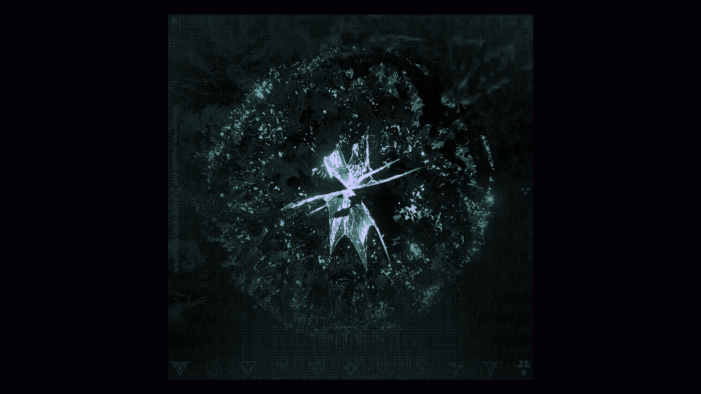

LunarDAO II is Open
Anyone can join the second LunarDAO raise based on LIP-0005 for upcoming 15 days and become a LunarDAOII Squad member.
Firn protocol, LunarDAO first investment, closed down without any communication with LunarDAO.
In this edition of Lunarpunk Views, we explore the innovative work of Nym, a project focused on evolving the internet and enhancing privacy.
LunarDAO squad Firn investment unvested with a great success. The first step on our common journey with Firn project. Anonymous fundraising is the next one!
As Stewards, we want to lead by example and contribute to the expansion of the dark forest. Therefore we have set up 15 Nym Exit Gateways. An exit gateway is the last node in the mixnet before the data reaches its destination and it is a critical part of infrastructure.
An on-chain proposal to support the development of Ethereum anonymizer Firn Protocol is submitted. This post gathers all important info for LunarDAO Squad about this LIP.
LunarDAO is launching! The initial DAO raise to support privacy development, the leap to assert our destiny and realise our mission. Between April 16th, 17:00 UTC and April 30th, 17:00 UTC the dark forest opens its permissionless gate for anyone to join the LunarDAO Squad and participate in shaping the future.
LunarDAO has finalized the multi-sig. The DAO is supported by privacy partisans who, through their everyday research, development and usage of essential privacy projects and tools are a part of realizing the lunarpunk imaginary.
Anon Shop is an e-commerce platform founded by entrepreneur Donely Gunn, which prioritizes customer privacy and security. Anon Shop provides a decentralized shopping experience using Amazon lockers and the Monero privacy coin.
This is our first interview in our series of Lunarpunk Views. In this interview we will get to know the cypherpunk and lunarpunk vision of Juraj Bednar: a hacker, founder of Paralelní Polis and author of, "Hack Yourself to a Better Life.”
It is now known to the vast majority of population that governments monitor and track the actions, communications, and movements of their citizens.
We need to be fully anonymous. This implies going under pseudonyms to manage all our interactions, both internal and external, accordingly. After weeks of work, we can admit that's no easy task.